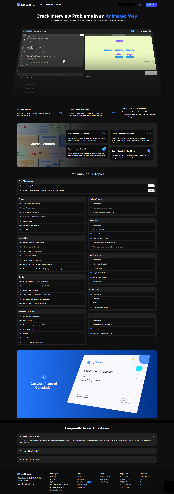

Course page redesign for the Log2Base2 learning platform.
Adobe XD | Photoshop
Log2Base2 is a visual programming education platform used by thousands of learners across skill levels. The course page is one of the highest-traffic pages on the platform — it's where prospective students evaluate a course before enrolling. The existing design buried critical information like module breakdowns, estimated duration, and skill prerequisites, making it difficult for users to make an informed enrollment decision quickly.
Students were dropping off before completing enrollment due to unclear course structure and poor content hierarchy. Key signals — like what they'd learn, how long it would take, and what level it was suited for — were either missing or lost in the layout. The page needed a full UX rethink to convert interest into action without overwhelming first-time visitors.
As the lead UX designer on the Log2Base2 product team, I owned the end-to-end design of this page — from initial user flow mapping and wireframing to high-fidelity mockups in Adobe XD and final developer handoff. I worked closely with the product manager to define information hierarchy and collaborated with the dev team to ensure design feasibility across breakpoints.
The redesign prioritized scannable content blocks: a sticky enrollment CTA, an above-the-fold summary card with course metadata, a collapsible module list, and a visual skill-level indicator. Typography and spacing were tuned to reduce cognitive load while maintaining the platform's bold, visual-first aesthetic. Custom Photoshop assets were created to support the course preview section.
Delivered a structured, visual-first course page that gave learners the clarity they needed to evaluate and enroll with confidence. The design was implemented across the platform and established a reusable template for future course page additions.
